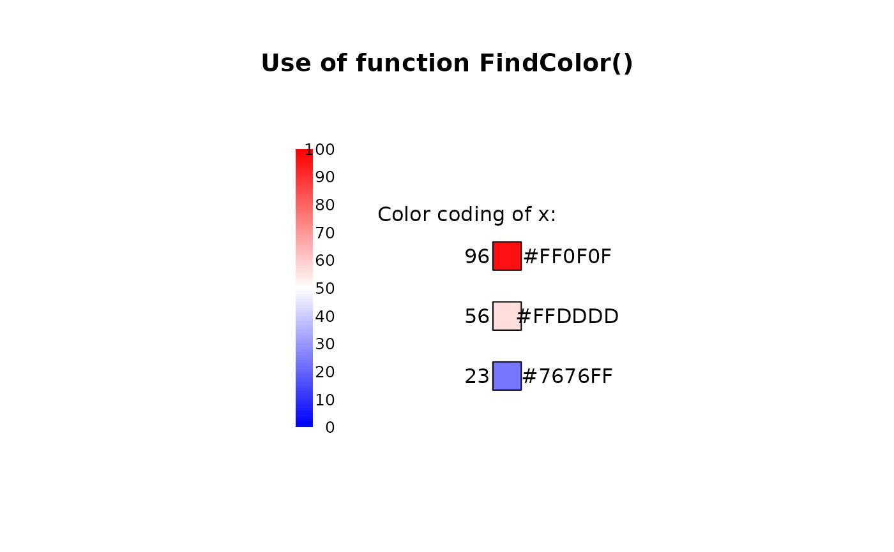
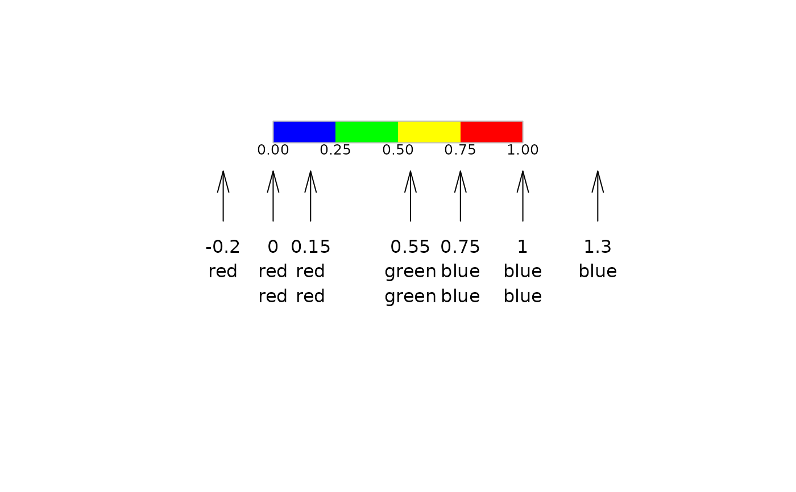

FindColor.RdFind a color on a defined color range depending on the value of x. This is helpful for colorcoding numeric values.
FindColor(x, cols = rev(heat.colors(100)), min.x = NULL, max.x = NULL, all.inside = FALSE)
| x | numeric. |
|---|---|
| cols | a vector of colors. |
| min.x | the x-value to be used for the left edge of the first color. If left to the default |
| max.x | the x-value to be used for the right edge of the last color. If left to the default |
| all.inside | logical; if true, the returned indices are coerced into |
For the selection of colors the option rightmost.closed in the used function
findInterval is set to TRUE.
This will ensure that all values on the right edge of the range are assigned a color.
How values outside the boundaries of min.x and max.x should be handled can be controlled by all.inside. Set this value to TRUE, if those values
should get the colors at the edges or set it to FALSE, if they should remain white (which is the default).
Note that findInterval closes the intervals on the left side, e.g. [0, 1). This option can't be changed. Consequently will x-values lying on the edge of two colors get the color of the bigger one.
Andri Signorell <andri@signorell.net>
# get some data x <- c(23, 56, 96) # get a color range from blue via white to red cols <- colorRampPalette(c("blue","white","red"))(100) ColorLegend(x="bottomleft", cols=cols, labels=seq(0, 100, 10), cex=0.8)# and now the color coding of x: (xcols <- FindColor(x, cols, min.x=0, max.x=100))#> [1] "#7676FF" "#FFDDDD" "#FF0F0F"# this should be the same as cols[x+1]#> [1] "#7676FF" "#FFDDDD" "#FF0F0F"cols <- c(red="red", yellow="yellow", green="green", blue="blue") ColorLegend(x=0, y=1, width=1, cols=rev(cols), horiz = TRUE, labels=Format(seq(0, 1, .25), digits=2), frame="grey", cex=0.8 )x <- c(-0.2, 0, 0.15, 0.55, .75, 1, 1.3) arrows(x0 = x, y0 = 0.6, y1 = 0.8, angle = 15, length = .2)text(x=x, y = 0.4, labels = names(FindColor(x, cols=cols, min.x = 0, max.x = 1, all.inside = TRUE)), adj = c(0.5,0.5))text(x=x, y = 0.3, labels = names(FindColor(x, cols=cols, min.x = 0, max.x = 1, all.inside = FALSE)), adj = c(0.5,0.5))